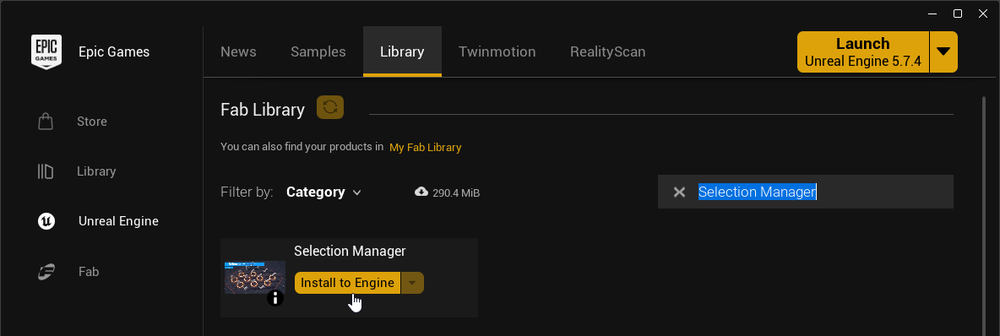
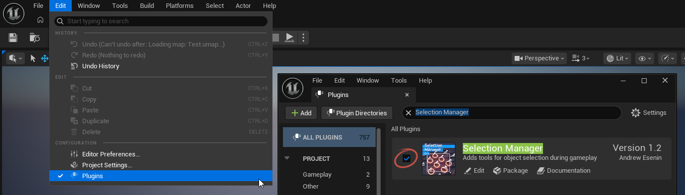
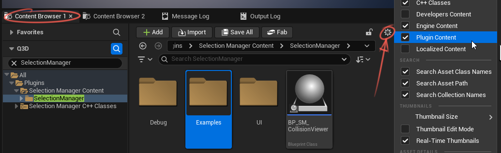
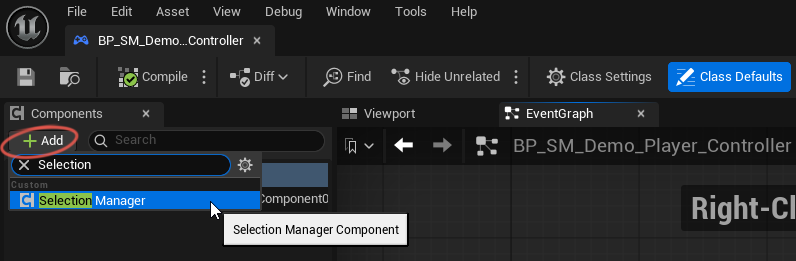
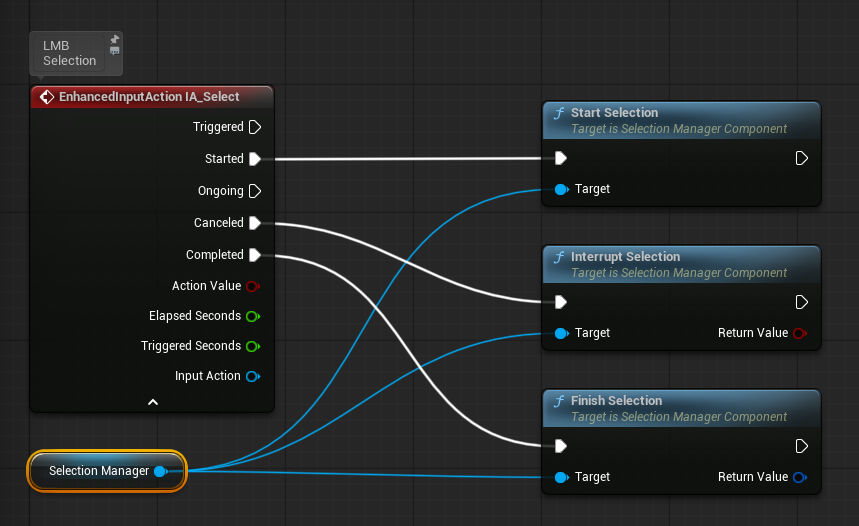
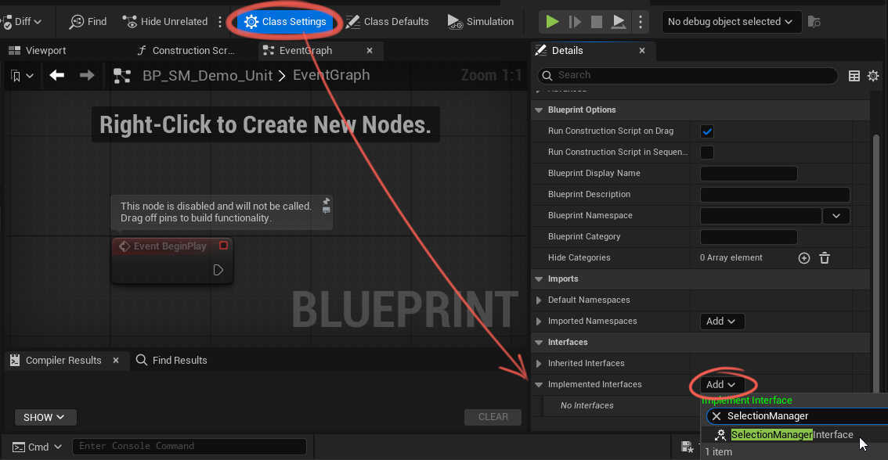
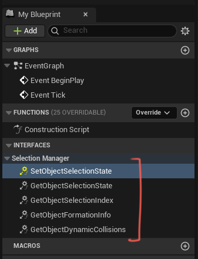
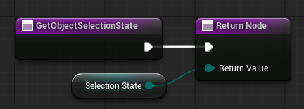
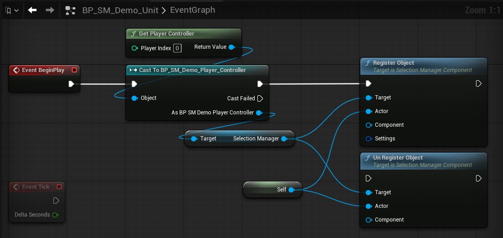
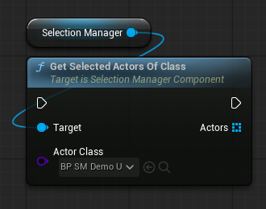

Selection Manager — Quick Start (UE 5.7+)
Install & Enable
-
In the Epic Games Launcher, go to the Library tab, search for Selection Manager,
click Install to Engine, and choose your engine version.
-
In the editor: Edit → Plugins, search "Selection Manager", tick Enabled, and restart the editor.

{kind=link}
{kind=link}
Example level
The plugin's Examples folder includes a ready-made level with everything already wired up and working. 
{kind=link}
1. Add the manager
Add a Selection Manager Component to your Player Controller.

{kind=link}
2. Hook up input
Set up your input bindings
Input system
I recommend using Enhanced Input
Enhanced Input is Unreal Engine's built-in modern input system
It is more flexible than the legacy input system and supports advanced input behavior
For more details, see: Enhanced Input Documentation
Demo Input
You can copy the demo input setup from BP_SM_Demo_Player_Controller as a quick solution for testing.
Bind the Selection Manager functions as follows: 
Pressed → Start Selection
Canceled → Interrupt Selection
Released → Finish Selection
{kind=link}
Optional modifiers:
Set Addition Selection Enabled (Shift) to add to the selection
Set Subtraction Selection Enabled (Ctrl) to remove
Screenshot
{kind=link}
3. Object Selection State
Add the Selection Manager Interface to the Blueprint class you want to make selectable:

{kind=link}
Selectable actor types
You can use any class derived from Actor as a selectable object, including Pawn and Character
This is useful for selectable units, buildings, and other gameplay objects.
You can select objects of different classes at the same time.
After adding the interface, the required functions will appear in the Blueprint. 
Double-click a function to implement it:
{kind=link}
| Function | Direction | Description |
|---|---|---|
Set Object Selection State |
Manager → Object | Called when the manager applies a new selection state to the object. Implement this function to update the object's visuals, such as selected or highlighted state. |
Get Object Selection State |
Object → Manager | Returns the object's current selection state, allowing the manager to read it and stay in sync. |
Get Object Selection Index |
Deprecated | Returns the object's selection index. Deprecated |
Get Object Formation Info |
Object → Manager | Returns whether the object belongs to a formation and which formation it belongs to. Used for group or formation co-selection. This value is read during registration and refresh. |
Get Object Dynamic Collisions |
Object → Manager | Returns the object's current marquee collision data each frame. This is only used when Use Dynamic Collisions is enabled, for example when collision depends on moving parts or bones. |
For the basic setup, you only need to implement
Set Object Selection State and Get Object Selection State.
💡 You can see how the remaining functions work in the included examples.
Create a Selection State variable. It has four possible states:
| State | Full Name | Description |
|---|---|---|
uSuH |
Un Selected and Un Highlighted | The default visual state. The object is not selected, and neither the cursor nor the selection box is hovering over it. |
uSH |
Un Selected and Highlighted | The object is not selected yet, but it is currently hovered by the cursor or covered by the selection box. This is typically used for hover preview or additive selection preview. |
SuH |
Selected and Un Highlighted | The object is still selected, but the highlight has been removed. This state is used during subtractive selection preview. |
SH |
Selected and Highlighted | The object is both selected and highlighted. This is the visual state for an already selected object. |
Next, configure your Actor's visuals for each selection state.
The Examples folder includes the BP_SM_Demo_Unit Blueprint, which contains a complete selection visual setup for all states.
In the Get Object Selection State interface function, return the Selection State variable you created earlier.
{kind=link}
4. Object Registration
To make an object selectable, register it in the Selection Manager.
Only registered objects can participate in selection.
If you have a small number of objects, you can register each object from its own Blueprint. 
In this case, you need to get a reference to the Selection Manager.
If you have many objects, or if they are controlled by a Player Controller or another manager,
it is usually better to register them from that controller or manager.
{kind=link}
💡 You can call
Un Register Objectwhen the object is destroyed or when it should no longer be selectable.
5. Use the selection
Use Get Selected Actors to get all currently selected actors.
Use Get Selected Actors by Class to get only selected actors of a specific class, for example only units or only buildings.
{kind=link}
If you want to change an object's selection state manually, for example when clicking a unit icon, use one of the following functions:
Set Object Selection State / Set Object Selected / Set Object Highlighted / Toggle Object Selection
{kind=link}